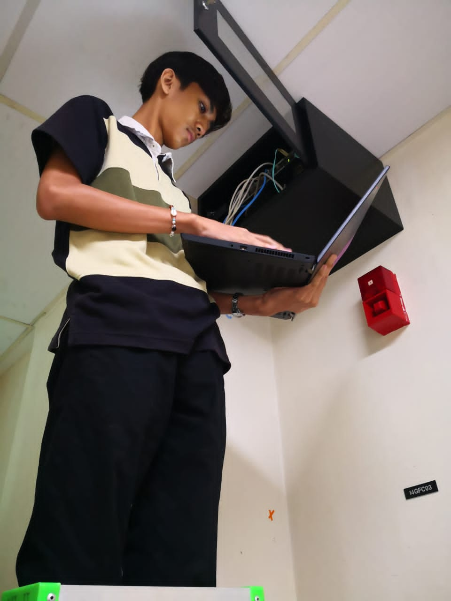
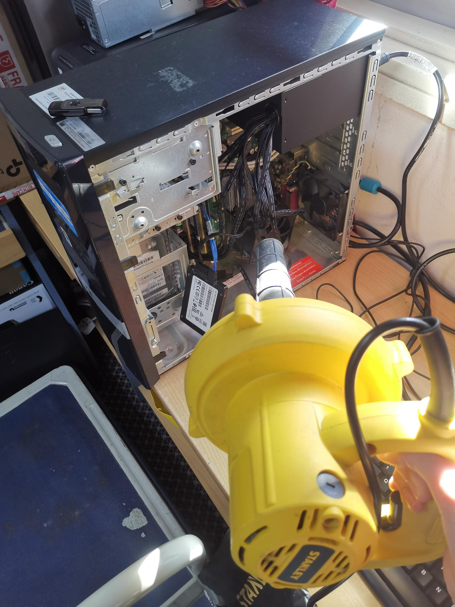
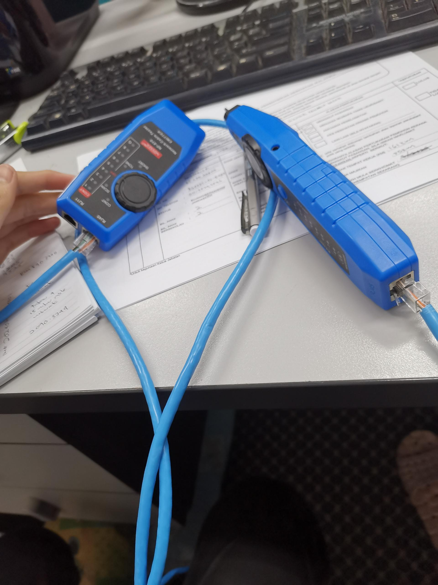

- Job Desription: Checking Network Switch
Test the power source by inserting it into a separate outlet or using another device, examining the power cord for damage or wear, and making sure the connection is secure

- Job Description: Troubleshooting CPU
open the cpu case because the cpu is not fully working, remove all the dust, clean the ram

- Job Description: Make an UTP Network Cable
The process consists of measuring and cutting the cable, arranging the wires, cutting them to the proper length, inserting them into the connection, crimping the connector, and testing the cable with tools.